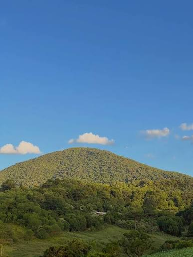

Hospital Frei Rogério
Associação Anjos do Frei.
Ver no mapa →Santa Catarina · Altitude 1.075 m
Natureza, altitude e enoturismo em harmonia. Descubra o Morro Agudo, o Circuito de Caravaggio e a hospitalidade colonial de Tangará.

AO VIVO Rampa do Morro Agudo Vento -- km/h · --°CO nome
Tangará deve seu nome ao pássaro Chiroxiphia caudata, famoso pela plumagem de cores fortes — azul-celeste e vermelho — e pela dança alegre em conjunto. Assim é a cidade: natureza preservada, altitude que convida ao voo e uma comunidade que recebe em roda, com vinho, café colonial e conversa.
Descubra Tangará
28 km de estrada
Dez paradas entre fé, uva, suco, cerveja artesanal e mirantes. Siga a linha e deixe-se guiar.
Linha Rio Bonito · Epagri Flor-e-Ser
Capitéis, xaxins e a experiência do pinhão: um roteiro de contemplação para fazer a pé, de bike ou de carro.
Sabores & descanso
Morro Agudo · 1.075 m
Acompanhe a rampa em tempo real e confira o vento antes de decolar.
Transmissão da rampa do Morro Agudo
Configure a URL da câmera emjs/app.js (CONFIG.cameraUrl).
Calendário
Mapa interativo
Posições aproximadas para planejamento. Confirme o acesso com a Secretaria de Turismo.
Utilidade pública
Associação Anjos do Frei.
Ver no mapa →193
Ligar agora →Socorro na SC-453.
Ver no mapa →